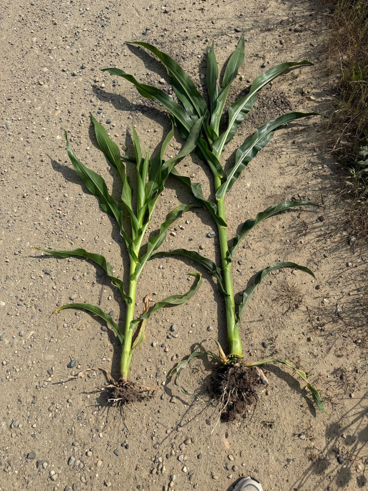
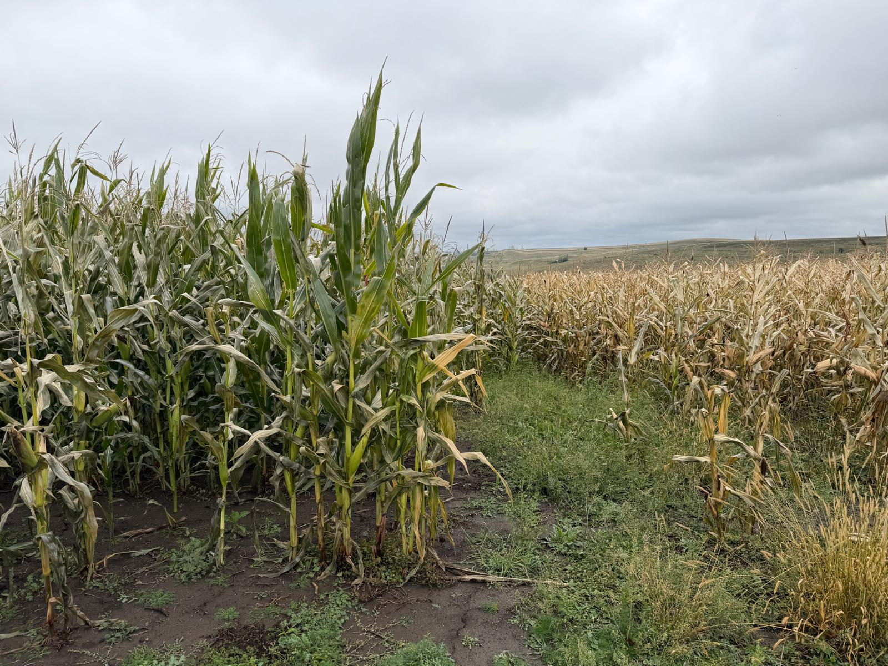
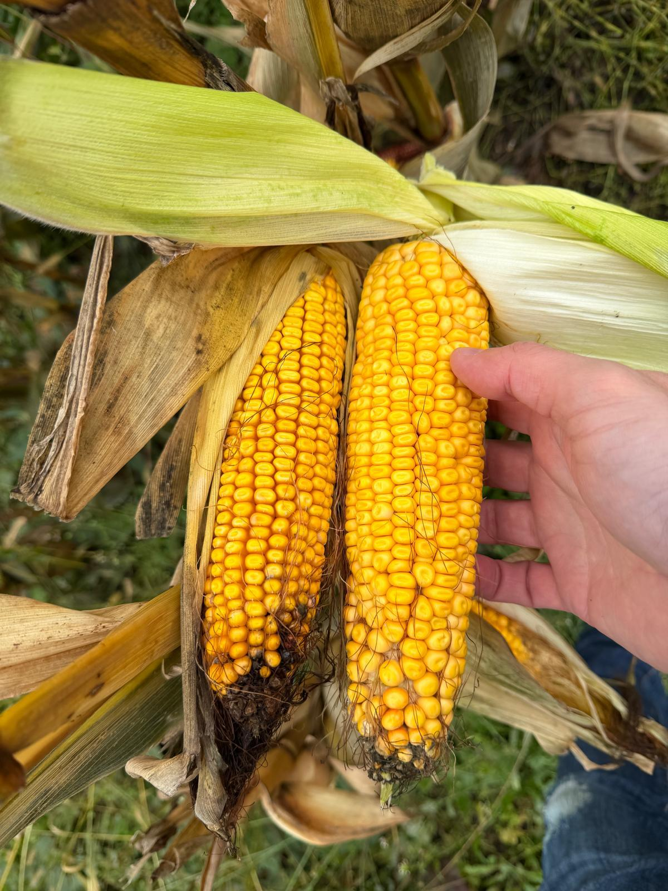
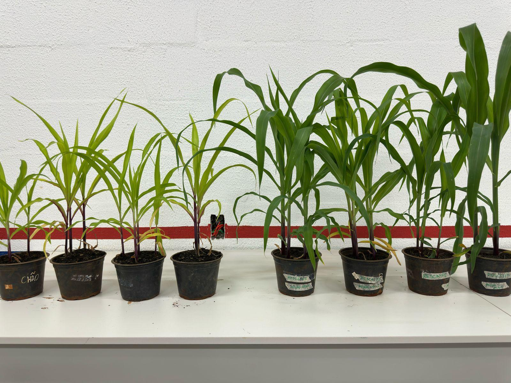

Restoring Land. Growing Opportunity. Sustaining Food Systems.
MOKES Agricultural Services Limited is a Ghanaian agribusiness company specializing in land reclamation, soil restoration, and mechanized agricultural services, with a focus on reclaiming saline and sodic soils for productive and sustainable farming.
To provide cost-effective and sustainable land reclamation and agricultural support services that restore degraded soils, enhance productivity, and support inclusive agricultural growth.
Productive land everywhere—driving resilient livelihoods and sustainable food systems.
MOKES applies a science-based, environmentally safe approach combining mineral soil amendments, non-toxic conditioners, mechanization, and water management. This ensures long-lasting soil improvement, not temporary yield gains.
We collaborate with government institutions, development partners, research services, and community leaders to achieve sustainable land restoration at scale.
Snapshots from our soil restoration and crop improvement work across Ghana.

Corn Growth Comparison: Visual difference in plant development under improved soil conditions.

Cornfield Contrast: Healthy vs stressed sections showing impact of soil treatment.

Harvest-Ready Corn: Mature ears of corn from restored plots.

Controlled Growth Study: Experimental setup comparing plant response to different soil treatments.
MOKES Agricultural Services Limited
M43/1 Madina New Road
La Nkwantanang Municipal, Greater Accra Region, Ghana
Phone: +233202812502
Email: mokesagricservices@gmail.com
Website: [Insert URL]